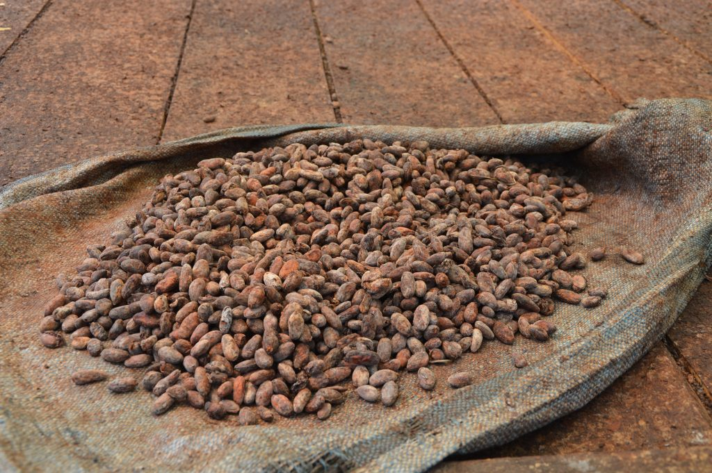
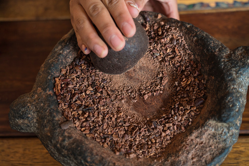

Wir setzen bei LalSchokolade auf sehr Qualitative Produkte die ihren entsprechenden Preis haben. Wir setzten ausschliesslich auf Bioprodukte. Die Kakaobohnen werden von gut bezahlten Arbeitern in Südamerika gepflückt und ausschliesslich in die Schweiz importiert. In der Schweiz werden die Bohnen schliesslich in diesen verschiedenen Schritten verarbeitet.
Beim Röstvorgang bilden sich die bis zu 400 verschiedenen Kakaoaromen aus. Das bedeutet, dass der Röstprozess direkten Einfluss auf das spätere Schokoladenprodukt hat und die Länge und Temperatur nach dem gewünschten Endprodukt bestimmt wird. Besonders hochwertige Kakaosorten die wir bei unserer Lalschokolade verwenden werden kürzer und bei geringeren Temperaturen geröstet, um das jeweilige Aromaprofil beizubehalten.

Nach dem Rösten werden die Bohnen aufgebrochen und sie verlieren ihre Schale. Übrig bleibt der Kakaokernbruch, der auch „Nibs“ genannt wird. Die Nibs riechen intensiv nach Schokolade.
Auf dem Weg zum Schokoladenprodukt heißt es nun endgültig Abschied nehmen von der Bohne. Nachdem sie schon zu Nibs zerkleinert worden sind, werden diese nun fein zermahlen. Durch den mechanischen Mahlvorgang werden die einzelnen Zellwände aufgebrochen und die Kakaobutter freigesetzt. Die durch den Mahlvorgang entstehende Reibungswärme lässt die wertvolle Kakaobutter schmelzen. Die goldgelbe Kakaobutter wird dann herausgepresst. Übrig bleibt der sogenannte Kakaokuchen ein fettarmer Kakaoblock, aus dem durch weiteres Walzen, die Zugabe weiterer Zutaten wie Kakaobutter und durch das Conchieren flüssige Schokolade wird. Aus dieser werden unsere köstlichen LalPralinen und unsere knackigen 100Gramm Tafeln Lalschokolade gemacht.
